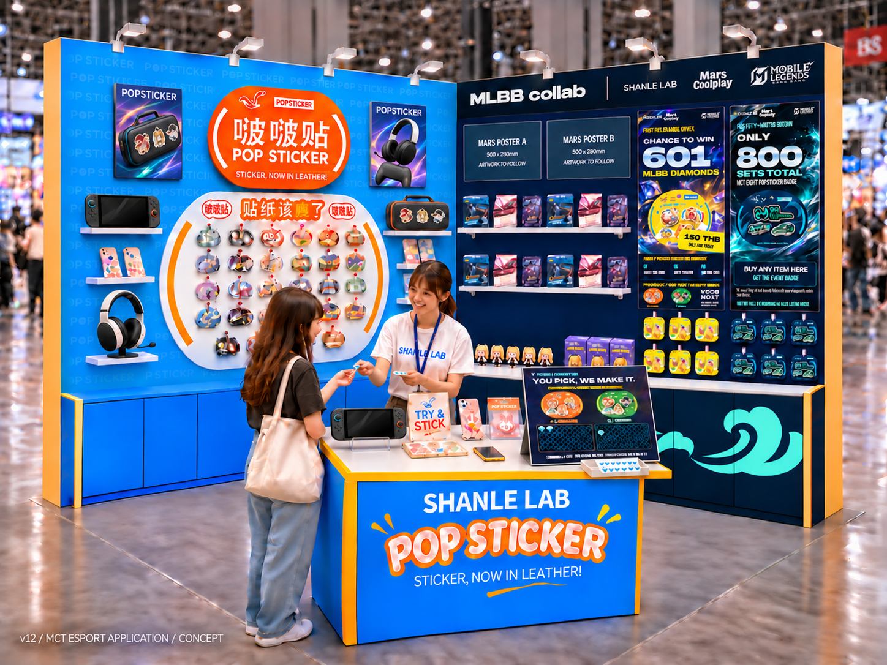
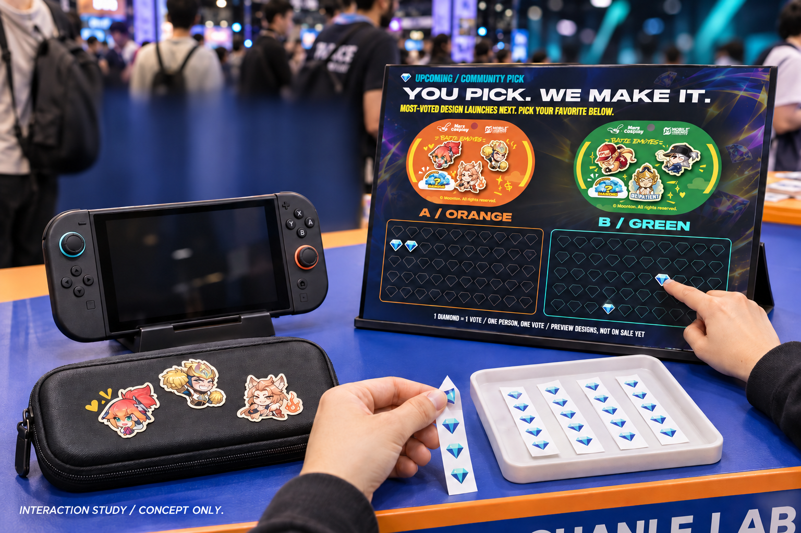
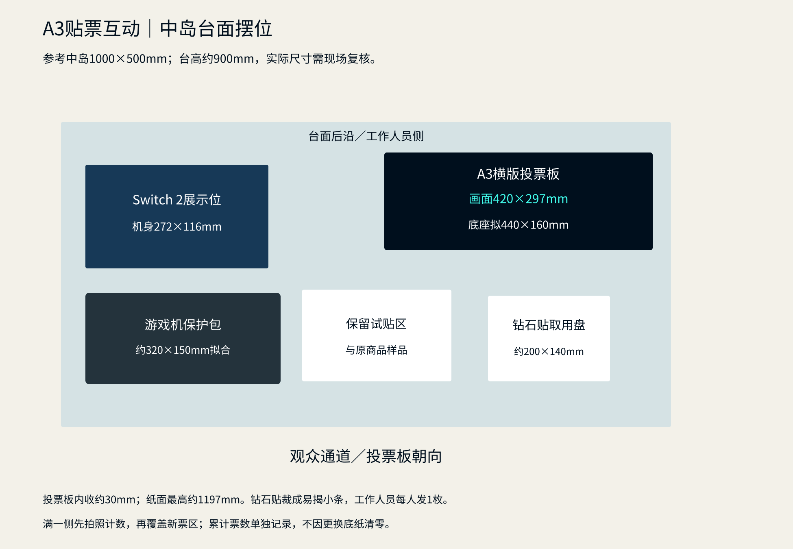
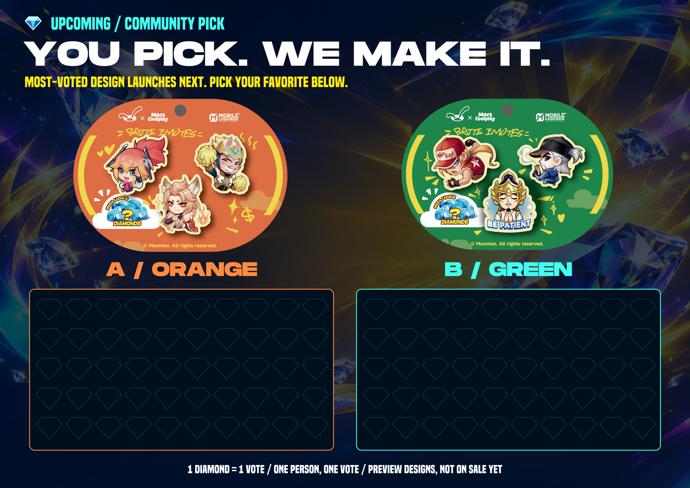
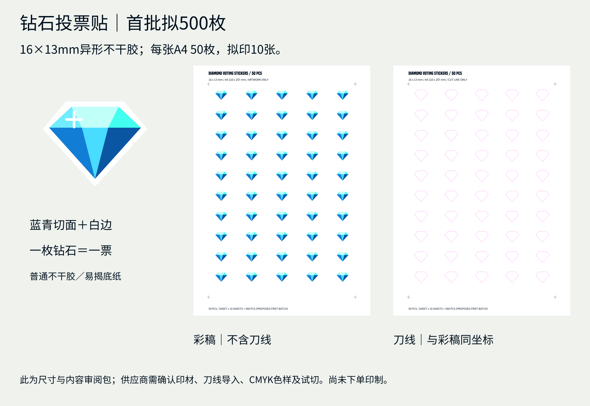

SHANLE LAB / MLBB MCT / v12 / 图稿已生成 · 待评审
贴一颗钻石，
选下一款。
按本轮要求改为A3横版投票板，配16×13mm蓝青钻石造型小不干胶。拟首批500枚，工作人员每位参与者发1枚，亲手贴在喜欢的橙色／绿色候选下方。投票尚未开放，没有实际票数；图中少量贴票仅为互动示意。
放进展位 · 应用场景转向电竞装备

部分手机换成正常尺寸的Switch 2；黄色女装包换成黑色硬壳游戏机保护包，棕色包改成游戏耳机。主墙两侧应用海报也改为保护包、耳机和手柄场景。保留中央椭圆识别和商品陈列结构，以及右墙MLBB合作头标、Mars卡牌／小粘土公仔、Layla601与MCT800海报。
空间图为生成式应用概念，非真实SKU摄影或施工证明。游戏设备与配件用于展示贴纸应用，设备屏幕采用待机／中性画面。原商品轮廓、Logo与正式文案以原资产平面稿为准。Layla商品正面以11月12日用户确认原图为准；空间图不作为SKU主图。
亲手贴票 · 取贴盘放在板前

A3板放中岛右后角，朝向观众；取贴盘放其前方，左侧保留Switch 2、保护包与试贴区域。板面420×297mm，底座拟440×160mm；每位参与者一枚钻石、一票，投票本身不等于领取MCT赠礼。

中岛1000×500×900mm为既有方案参考，现场尺寸与底座稳定性需复核。投票板最高约1197mm。外背墙v11三组新方案及旧稿仍保留为备选，本轮没有替用户选定。
A3板 · 420×297mm

每侧50个指引位，单板100位，属于摆位容量，不是整场投票上限。满一侧先拍照、复核并记录累计数，再覆盖该侧新底纸，累计不清零。最高票候选作为下一款推出；投票起止、并列处理与公示时间开票前落实。
A3投票板 PDF · 矢量SVG · 可替换票区SVG · A4上排两块
钻石小不干胶 · 首批拟500枚

普通平面不干胶，蓝青切面＋白边。每张A4排50枚，拟印10张；可按每排5枚裁成易揭小条放进取贴盘。钻石为新绘制的通用投票图形，非PopSticker商品改形，也不是树脂钻或立体物件。
A4彩稿 PDF · 50枚 · A4独立刀线 PDF · 单枚矢量SVG
下载整套审阅交付包 ZIP · 供应与现场执行说明
已完成图稿及排版，尚未下单印刷或制造。PDF尺寸已核对；RGB色样、刀线导入及材料试切由供应商确认后生产，独立刀线不混入彩稿。正式活动数量尚未确认，500枚为拟定首批。